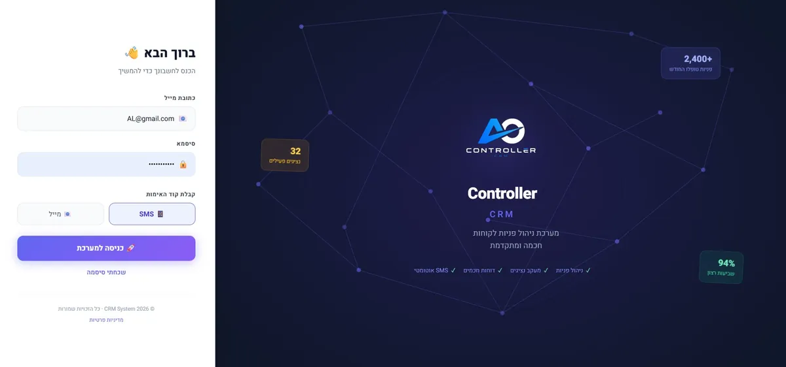

מערכת ניהול מסמכים עסקיים היא כלי שמרכז את כל המסמכים של העסק - חוזים, הצעות מחיר, חשבוניות, מסמכי לקוחות וקבצים נלווים - במקום אחד מקוון, מקושר ישירות לכרטיס הלקוח הרלוונטי, כך שכל עובד יודע תמיד איפה למצוא כל מסמך בלי לחפש בתיקיות, במיילים או בווטסאפ. ב-A.L Systems פתרנו את זה כחלק ממערכת ה-CRM, בלי צורך בתוכנה נפרדת לניהול מסמכים.
הבעיה: מסמכים מפוזרים בלי שום סדר
ברוב העסקים הקטנים והבינוניים המסמכים נמצאים בכל מקום - חלק בתיקיית Drive, חלק במייל, חלק בווטסאפ של בעל העסק האישי, וחלק מודפסים במגירה. כשלקוח מתקשר ושואל "איפה החוזה שחתמנו", או כשצריך למצוא הצעת מחיר ישנה כדי להשוות גרסאות, מתחיל מרדף: מי שלח את זה, באיזה תאריך, לאיזה מייל. זה לא רק מביך מול לקוח - זה עולה זמן עבודה אמיתי, ולפעמים גם כסף, כשמסמך חשוב פשוט אובד או שלא עומדים בלוחות זמנים כי אי אפשר לאתר מסמך קודם. הבעיה מחריפה ככל שהעסק גדל ויש יותר עובדים שצריכים גישה לאותם מסמכים, בלי שום בקרה על מי ערך מה ומתי.
הפתרון: ניהול מסמכים מקושר ללקוח, בתוך ה-CRM
זו בדיוק הסיבה ש-A.L Systems, בניהולו של אדיר לוי משדרות, בנתה את ה-CRM של A.L Systems - מאפשרת להעלות, לשמור ולשייך כל מסמך ישירות לכרטיס הלקוח או העסקה שלו - כך שחוזה, הצעת מחיר או קובץ סריקה נמצאים תמיד באותו מקום שבו נמצא כל מידע אחר על אותו לקוח. אין צורך לפתוח תוכנה נפרדת לניהול מסמכים ועוד תוכנה לניהול לקוחות - הכל מתנהל במערכת אחת, עם חיפוש מהיר, הרשאות גישה לפי משתמש, והיסטוריית גרסאות שמראה מי העלה מה ומתי:

- קישור ישיר ללקוח או לעסקה - כל מסמך שמועלה נשמר תחת כרטיס הלקוח הספציפי, כך שבעתיד מספיק לפתוח את הכרטיס כדי לראות את כל ההיסטוריה המסמכית שלו - חוזים, הצעות, התכתבויות מצורפות וקבצים נוספים.
- חיפוש מהיר לפי שם לקוח או סוג מסמך - במקום לגלול בתיקיות, אפשר לחפש לפי שם הלקוח, מספר עסקה או סוג המסמך ולמצוא את הקובץ תוך שניות, גם כשמדובר באלפי מסמכים שנצברו לאורך זמן.
- הרשאות גישה מדורגות - ניתן להגדיר אילו עובדים רואים אילו מסמכים - כך שמסמכים רגישים כמו חוזים פיננסיים נשארים חשופים רק לבעלי התפקיד הרלוונטי, ולא לכל מי שיש לו גישה למערכת.
- היסטוריית גרסאות ועדכונים - כשמסמך מתעדכן (למשל הצעת מחיר שעברה שינוי), המערכת שומרת את הגרסה הקודמת לצד החדשה, כך שתמיד אפשר לבדוק מה היה הסיכום המקורי מול הלקוח.
- התראות ותזכורות למסמכים תלויי זמן - חוזים עם תאריך תפוגה, הצעות מחיר עם תוקף מוגבל או מסמכים שצריך לחדש - ניתן להגדיר עליהם תזכורת אוטומטית כדי שלא ייפלו בין הכיסאות.
- גישה מהנייד בזמן אמת - איש מכירות שנמצא אצל לקוח יכול לפתוח את המסמך הרלוונטי ישירות מהטלפון, בלי לחזור למשרד או לבקש ממישהו לשלוח קובץ.
דוגמה: חברת שיפוצים עם 40 לקוחות פעילים במקביל
נניח חברת שיפוצים קטנה שמנהלת בו-זמנית כ-40 פרויקטים פתוחים. לכל פרויקט יש הצעת מחיר חתומה, חוזה עבודה, תוכנית עבודה מצורפת מהאדריכל, ולעיתים גם קבצי תמונות 'לפני' לצורך תיעוד. בלי מערכת מרוכזת, מנהל הפרויקטים צריך לזכור בכל פעם איפה שמר כל קובץ - ולרוב זה מתפזר בין מייל לווטסאפ לנייד האישי. עם ה-CRM, ברגע שנפתח כרטיס לקוח חדש בשם 'משפחת כהן - שיפוץ מטבח', כל מסמך שקשור לעבודה הזו - הצעת המחיר המקורית, החוזה החתום, תוכנית העבודה וקובץ התמונות - מועלה ומקושר ישירות לאותו כרטיס. כשהלקוח מתקשר אחרי חודשיים ושואל שאלה לגבי סעיף בחוזה, נציג השירות פותח את הכרטיס, מוצא את החוזה תוך שניות, ועונה ללקוח בלי להעביר אותו הלאה או לחפש במחשב אחר. באותו אופן, כשצריך להכין דוח לרואה חשבון בסוף רבעון, אפשר לייצא מתוך המערכת את כל הצעות המחיר וההסכמים שנחתמו בתקופה הנתונה, במקום לאסוף אותם ידנית ממקורות שונים.
למה לא מספיק רק Google Drive או תיקיות משותפות
תוכנות אחסון כלליות כמו Drive או Dropbox פותרות רק חלק מהבעיה - הן שומרות קבצים, אבל לא יודעות מי הלקוח, איזו עסקה קשורה למסמך, ומה הסטטוס שלו. כשהתיקיות מתרבות ויש עשרות או מאות לקוחות, גם אחסון מסודר הופך למבוך של תתי-תיקיות שקשה לנווט בו. בנוסף, אין קישור אוטומטי בין המסמך לפעולות אחרות בעסק - אי אפשר לדעת מתוך המסמך עצמו מה סטטוס העסקה, האם שולם, או מתי נקבעה הפגישה הבאה. כשניהול המסמכים נמצא בתוך ה-CRM, כל פיסת מידע על הלקוח - שיחות, הצעות, חוזים, תשלומים - חיה באותו מקום, וזה מה שהופך את החיפוש והמעקב ליעילים באמת.
אבטחת מידע ועמידה בדרישות רגולטוריות
מסמכים עסקיים כוללים לעיתים מידע רגיש - פרטי תשלום, מספרי תעודת זהות, תנאי הסכם חסויים. ניהול מסמכים דרך תיקיות משותפות או מיילים חושף את העסק לסיכון שמידע יגיע לידיים הלא נכונות, בין אם בטעות ובין אם כתוצאה מעזיבת עובד שלא נחסמה לו הגישה בזמן. במערכת ה-CRM אפשר להגדיר במדויק מי רואה מה, לנתק גישה מיידית לעובד שעוזב, ולשמור יומן פעולות שמראה מי צפה או ערך כל מסמך - מה שחשוב גם מבחינה פנימית וגם כשצריך להוכיח תהליך עבודה מסודר מול רשות או מול לקוח.
חיסכון זמן אמיתי בעבודה היומיומית
כשמחשבים כמה דקות בממוצע לוקח לעובד למצוא מסמך ישן - לפתוח מייל, לחפש לפי תאריך משוער, לשאול עמית אם הוא יודע איפה זה נשמר - מגיעים למספר לא קטן שמצטבר על פני עשרות פעולות ביום בעסק עמוס. ריכוז המסמכים בכרטיס הלקוח מצמצם את זמן האיתור לכמה שניות, ומאפשר לעובדים להתמקד בעבודה עצמה במקום בחיפוש אחר מידע שכבר קיים במערכת אבל פשוט לא נגיש.